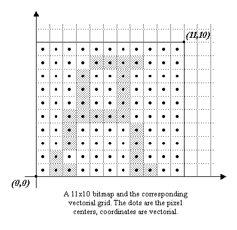

The purpose of this section is to present the way FreeType manages
bitmaps and pixmaps, and how they relate to the concepts previously
defined. The relationships between vectorial and pixel coordinates is
explained.
1. Vectorial versus pixel coordinates
This sub-section explains the differences between vectorial and pixel
coordinates. To make things clear, brackets will be used to describe
pixel coordinates, e.g. [3,5], while parentheses will be used for
vectorial ones, e.g. (-2,3.5).
In the pixel case, as we use the Y upwards convention;
the coordinate [0,0] always refers to the lower left pixel of a
bitmap, while coordinate [width-1, rows-1] to its upper right
pixel.
In the vectorial case, point coordinates are expressed in floating
units, like (1.25, -2.3). Such a position doesn't refer to a given
pixel, but simply to an immaterial point in the 2D plane.
The pixels themselves are indeed square boxes of the 2D
plane, whose centers lie in half pixel coordinates. For example, the
lower left pixel of a bitmap is delimited by the square (0,0)-(1,1), its
center being at location (0.5,0.5).
This introduces some differences when computing distances. For
example, the length in pixels of the line [0,0]-[10,0] is 11.
However, the vectorial distance between (0,0)-(10,0) covers exactly
10 pixel centers, hence its length is 10.

2. FreeType bitmap and pixmap descriptor
A bitmap or pixmap is described through a single structure, called
FT_Bitmap, defined in the file
<freetype/ftimage.h>. It is a simple descriptor whose
fields are:
FT_Bitmap
|
rows
|
the number of rows, i.e. lines, in the bitmap
|
|
width
|
the number of horizontal pixels in the bitmap
|
|
pitch
|
its absolute value is the number of bytes per bitmap line; it can
be either positive or negative depending on the bitmap's vertical
orientation
|
|
buffer
|
a typeless pointer to the bitmap pixel bufer
|
|
pixel_mode
|
an enumeration used to describe the pixel format of the bitmap;
examples are ft_pixel_mode_mono for 1-bit monochrome
bitmaps and ft_pixel_mode_grays for 8-bit anti-aliased
"gray" values
|
|
num_grays
|
this is only used for "gray" pixel modes, it gives the number of
gray levels used to describe the anti-aliased gray levels --
256 by default with FreeType 2
|
Note that the sign of the pitch fields determines whether
the rows in the pixel buffer are stored in ascending or descending
order.
Remember that FreeType uses the Y upwards convention in
the 2D plane, which means that a coordinate of (0,0) always refer to the
lower-left corner of a bitmap.
If the pitch is positive, the rows are stored in decreasing vertical
position; the first bytes of the pixel buffer are part of the
upper bitmap row.
On the opposite, if the pitch is negative, the first bytes of the
pixel buffer are part of the lower bitmap row.
In all cases, one can see the pitch as the byte increment needed to
skip to the next lower scanline in a given bitmap buffer.
The "positive pitch" convention is very often used, though
some systems might need the other.
3. Converting outlines into bitmaps and pixmaps
Generating a bitmap or pixmap image from a vectorial image is easy
with FreeType. However, one must understand a few points regarding the
positioning of the outline in the 2D plane before converting it to a
bitmap:
-
The glyph loader and hinter always places the outline in the 2D
plane so that (0,0) matches its character origin. This means that
the glyph's outline, and corresponding bounding box, can be placed
anywhere in the 2D plane (see the graphics in section III).
-
The target bitmap's area is mapped to the 2D plane, with its
lower left corner at (0,0). This means that a bitmap or pixmap of
dimensions [w,h] will be mapped to a 2D rectangle window
delimited by (0,0)-(w,h).
-
When scan-converting the outline, everything that falls within
the bitmap window is rendered, the rest is ignored.
A common mistake made by many developers when they begin using
FreeType is believing that a loaded outline can be directly rendered
in a bitmap of adequate dimensions. The following images illustrate
why this is a problem.
-
The first image shows a loaded outline in the 2D plane.
-
The second one shows the target window for a bitmap of arbitrary
dimensions [w,h].
-
The third one shows the juxtaposition of the outline and window in
the 2D plane.
-
The last image shows what will really be rendered in the bitmap.

Indeed, in nearly all cases, the loaded or transformed outline must
be translated before it is rendered into a target bitmap, in order to
adjust its position relative to the target window.
For example, the correct way of creating a standalone glyph
bitmap is as follows
-
Compute the size of the glyph bitmap. It can be computed
directly from the glyph metrics, or by computing its bounding box
(this is useful when a transformation has been applied to the
outline after the load, as the glyph metrics are not valid
anymore).
-
Create the bitmap with the computed dimensions. Don't forget to
fill the pixel buffer with the background color.
-
Translate the outline so that its lower left corner matches
(0,0). Don't forget that in order to preserve hinting, one should
use integer, i.e. rounded distances (of course, this isn't required
if preserving hinting information doesn't matter, like with rotated
text). Usually, this means translating with a vector
(-ROUND(xMin), -ROUND(yMin)).
-
Call the rendering function (it can be
FT_Outline_Render() for example).
In the case where one wants to write glyph images directly into a
large bitmap, the outlines must be translated so that their vectorial
position correspond to the current text cursor/character origin.